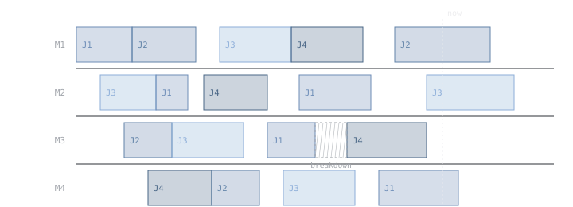
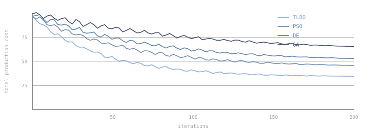
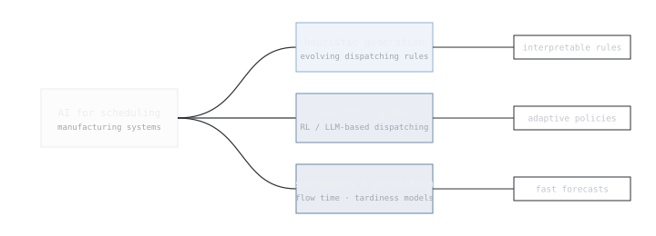

2026
Under review
From Dispatching Rules to Self-Learning Scheduling: A Critical Review of Evolutionary and Intelligent Approaches for Dynamic Manufacturing Systems
Swarm and Evolutionary Computation · under review
Research
Scheduling decides which job is processed next, on which machine, and when. In real production systems this decision has to be taken continuously and under uncertainty — machines break down, urgent orders arrive, and processing times vary. My research develops scheduling methods that are adaptive, computationally cheap at decision time, and interpretable enough for engineers to trust.
Area 01
How can scheduling heuristics learn and adapt on their own?
Dispatching rules — simple priority rules that select the next job from a queue — remain the most widely used scheduling method in practice because they are fast, transparent and easy to implement. Their weakness is that any single hand-designed rule performs well only in the conditions it was designed for. My PhD research addresses this gap by developing self-learning composite dispatching rules: heuristics constructed automatically by evolutionary hyper-heuristics, combining elementary rules and shop-floor attributes into composite expressions that learn from production data and respond to changing system conditions such as machine breakdowns, rush orders and stochastic processing times.

Swarm and Evolutionary Computation · under review
International Journal of Science and Research Archive, 17(02), 885–894
Area 02
How should metaheuristics be designed for cost-oriented industrial scheduling?
Hybrid flow shop scheduling lies at the heart of many production environments, and in industry the objective that matters is often cost. My work designs and analyses metaheuristic algorithms — teaching-learning-based optimization, particle swarm optimization, differential evolution and related methods — for minimizing total production cost and makespan in hybrid flow shops, including settings with non-identical parallel machines. This line of work began with my master’s thesis, which received a Best Thesis Award.

Expert Systems with Applications, 273, 126955
Journal of Advanced Research Design, 132(1), 41–51
International Journal of Automotive and Mechanical Engineering, 21(3), 11616–11628
International Journal of Global Optimization and Its Application, 2(4), 244–254
Area 03
What can artificial intelligence — and language models — do for scheduling?
Alongside algorithm design, I study the broader landscape of intelligent scheduling through systematic reviews: how reinforcement learning, surrogate models and large language models are being applied to manufacturing scheduling, from heuristic generation to conversational scheduling assistants. These reviews map open problems, adoption barriers and research opportunities, and position my doctoral work within the transition from hand-designed to self-learning scheduling.

Engineering Applications of Artificial Intelligence · under review
Swarm and Evolutionary Computation · under review
Complete list
Indonesian Journal of Electrical Engineering and Computer Science (IJMECS), 17(3), 1–14
2024 IEEE 6th Symposium on Computers & Informatics (ISCI), 55–59
Evolutionary Intelligence · accepted
Arabian Journal for Science and Engineering · under review
European Journal of Operational Research · under review
Journal of Information Systems Engineering and Business Intelligence · under review
Pakistan Journal of Engineering and Applied Sciences · accepted
Journal of International Education in Business · under review